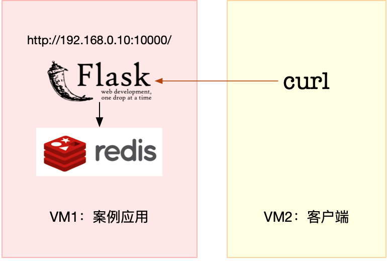

- 00 开篇词 别再让Linux性能问题成为你的绊脚石.md.html
- 01 如何学习Linux性能优化？.md.html
- 02 基础篇：到底应该怎么理解“平均负载”？.md.html
- 03 基础篇：经常说的 CPU 上下文切换是什么意思？（上）.md.html
- 04 基础篇：经常说的 CPU 上下文切换是什么意思？（下）.md.html
- 05 基础篇：某个应用的CPU使用率居然达到100%，我该怎么办？.md.html
- 06 案例篇：系统的 CPU 使用率很高，但为啥却找不到高 CPU 的应用？.md.html
- 07 案例篇：系统中出现大量不可中断进程和僵尸进程怎么办？（上）.md.html
- 08 案例篇：系统中出现大量不可中断进程和僵尸进程怎么办？（下）.md.html
- 09 基础篇：怎么理解Linux软中断？.md.html
- 10 案例篇：系统的软中断CPU使用率升高，我该怎么办？.md.html
- 11 套路篇：如何迅速分析出系统CPU的瓶颈在哪里？.md.html
- 12 套路篇：CPU 性能优化的几个思路.md.html
- 13 答疑（一）：无法模拟出 RES 中断的问题，怎么办？.md.html
- 14 答疑（二）：如何用perf工具分析Java程序？.md.html
- 15 基础篇：Linux内存是怎么工作的？.md.html
- 16 基础篇：怎么理解内存中的Buffer和Cache？.md.html
- 17 案例篇：如何利用系统缓存优化程序的运行效率？.md.html
- 18 案例篇：内存泄漏了，我该如何定位和处理？.md.html
- 19 案例篇：为什么系统的Swap变高了（上）.md.html
- 20 案例篇：为什么系统的Swap变高了？（下）.md.html
- 21 套路篇：如何“快准狠”找到系统内存的问题？.md.html
- 22 答疑（三）：文件系统与磁盘的区别是什么？.md.html
- 23 基础篇：Linux 文件系统是怎么工作的？.md.html
- 24 基础篇：Linux 磁盘I_O是怎么工作的（上）.md.html
- 25 基础篇：Linux 磁盘I_O是怎么工作的（下）.md.html
- 26 案例篇：如何找出狂打日志的“内鬼”？.md.html
- 27 案例篇：为什么我的磁盘I_O延迟很高？.md.html
- 28 案例篇：一个SQL查询要15秒，这是怎么回事？.md.html
- 29 案例篇：Redis响应严重延迟，如何解决？.md.html
- 30 套路篇：如何迅速分析出系统I_O的瓶颈在哪里？.md.html
- 31 套路篇：磁盘 I_O 性能优化的几个思路.md.html
- 32 答疑（四）：阻塞、非阻塞 I_O 与同步、异步 I_O 的区别和联系.md.html
- 33 关于 Linux 网络，你必须知道这些（上）.md.html
- 34 关于 Linux 网络，你必须知道这些（下）.md.html
- 35 基础篇：C10K 和 C1000K 回顾.md.html
- 36 套路篇：怎么评估系统的网络性能？.md.html
- 37 案例篇：DNS 解析时快时慢，我该怎么办？.md.html
- 38 案例篇：怎么使用 tcpdump 和 Wireshark 分析网络流量？.md.html
- 39 案例篇：怎么缓解 DDoS 攻击带来的性能下降问题？.md.html
- 40 案例篇：网络请求延迟变大了，我该怎么办？.md.html
- 41 案例篇：如何优化 NAT 性能？（上）.md.html
- 42 案例篇：如何优化 NAT 性能？（下）.md.html
- 43 套路篇：网络性能优化的几个思路（上）.md.html
- 44 套路篇：网络性能优化的几个思路（下）.md.html
- 45 答疑（五）：网络收发过程中，缓冲区位置在哪里？.md.html
- 46 案例篇：为什么应用容器化后，启动慢了很多？.md.html
- 47 案例篇：服务器总是时不时丢包，我该怎么办？（上）.md.html
- 48 案例篇：服务器总是时不时丢包，我该怎么办？（下）.md.html
- 49 案例篇：内核线程 CPU 利用率太高，我该怎么办？.md.html
- 50 案例篇：动态追踪怎么用？（上）.md.html
- 51 案例篇：动态追踪怎么用？（下）.md.html
- 52 案例篇：服务吞吐量下降很厉害，怎么分析？.md.html
- 53 套路篇：系统监控的综合思路.md.html
- 54 套路篇：应用监控的一般思路.md.html
- 55 套路篇：分析性能问题的一般步骤.md.html
- 56 套路篇：优化性能问题的一般方法.md.html
- 57 套路篇：Linux 性能工具速查.md.html
- 58 答疑（六）：容器冷启动如何性能分析？.md.html
- 加餐（一） 书单推荐：性能优化和Linux 系统原理.md.html
- 加餐（二） 书单推荐：网络原理和 Linux 内核实现.md.html
- 用户故事 “半路出家 ”，也要顺利拿下性能优化！.md.html
- 用户故事 运维和开发工程师们怎么说？.md.html
- 结束语 愿你攻克性能难关.md.html
- 捐赠
29 案例篇：Redis响应严重延迟，如何解决？
你好，我是倪朋飞。
上一节，我们一起分析了一个基于 MySQL 的商品搜索案例，先来回顾一下。
在访问商品搜索接口时，我们发现接口的响应特别慢。通过对系统 CPU、内存和磁盘 I/O 等资源使用情况的分析，我们发现这时出现了磁盘的 I/O 瓶颈，并且正是案例应用导致的。
接着，我们借助 pidstat，发现罪魁祸首是 mysqld 进程。我们又通过 strace、lsof，找出了 mysqld 正在读的文件。根据文件的名字和路径，我们找出了 mysqld 正在操作的数据库和数据表。综合这些信息，我们猜测这是一个没利用索引导致的慢查询问题。
为了验证猜测，我们到 MySQL 命令行终端，使用数据库分析工具发现，案例应用访问的字段果然没有索引。既然猜测是正确的，那增加索引后，问题就自然解决了。
从这个案例你会发现，MySQL 的 MyISAM 引擎，主要依赖系统缓存加速磁盘 I/O 的访问。可如果系统中还有其他应用同时运行， MyISAM 引擎很难充分利用系统缓存。缓存可能会被其他应用程序占用，甚至被清理掉。
所以，一般我并不建议，把应用程序的性能优化完全建立在系统缓存上。最好能在应用程序的内部分配内存，构建完全自主控制的缓存；或者使用第三方的缓存应用，比如 Memcached、Redis 等。
Redis 是最常用的键值存储系统之一，常用作数据库、高速缓存和消息队列代理等。Redis 基于内存来存储数据，不过，为了保证在服务器异常时数据不丢失，很多情况下，我们要为它配置持久化，而这就可能会引发磁盘 I/O 的性能问题。
今天，我就带你一起来分析一个利用 Redis 作为缓存的案例。这同样是一个基于 Python Flask 的应用程序，它提供了一个 查询缓存的接口，但接口的响应时间比较长，并不能满足线上系统的要求。
非常感谢携程系统研发部资深后端工程师董国星，帮助提供了今天的案例。
案例准备
本次案例还是基于 Ubuntu 18.04，同样适用于其他的 Linux 系统。我使用的案例环境如下所示：
机器配置：2 CPU，8GB 内存
预先安装 docker、sysstat 、git、make 等工具，如 apt install docker.io sysstat
今天的案例由 Python应用+Redis 两部分组成。其中，Python 应用是一个基于 Flask 的应用，它会利用 Redis ，来管理应用程序的缓存，并对外提供三个 HTTP 接口：
/：返回 hello redis；
/init/ ：插入指定数量的缓存数据，如果不指定数量，默认的是 5000 条；
缓存的键格式为 uuid:
缓存的值为 good、bad 或 normal 三者之一
/get_cache/
由于应用比较多，为了方便你运行，我把它们打包成了两个 Docker 镜像，并推送到了 Github 上。这样你就只需要运行几条命令，就可以启动了。
今天的案例需要两台虚拟机，其中一台用作案例分析的目标机器，运行 Flask 应用，它的 IP 地址是 192.168.0.10；而另一台作为客户端，请求缓存查询接口。我画了一张图来表示它们的关系。

接下来，打开两个终端，分别 SSH 登录到这两台虚拟机中，并在第一台虚拟机中安装上述工具。
跟以前一样，案例中所有命令都默认以 root 用户运行，如果你是用普通用户身份登陆系统，请运行 sudo su root 命令切换到 root 用户。
到这里，准备工作就完成了。接下来，我们正式进入操作环节。
案例分析
首先，我们在第一个终端中，执行下面的命令，运行本次案例要分析的目标应用。正常情况下，你应该可以看到下面的输出：
# 注意下面的随机字符串是容器ID，每次运行均会不同，并且你不需要关注它
$ docker run --name=redis -itd -p 10000:80 feisky/redis-server
ec41cb9e4dd5cb7079e1d9f72b7cee7de67278dbd3bd0956b4c0846bff211803
$ docker run --name=app --network=container:redis -itd feisky/redis-app
2c54eb252d0552448320d9155a2618b799a1e71d7289ec7277a61e72a9de5fd0
然后，再运行 docker ps 命令，确认两个容器都处于运行（Up）状态：
$ docker ps
CONTAINER ID IMAGE COMMAND CREATED STATUS PORTS NAMES
2c54eb252d05 feisky/redis-app "python /app.py" 48 seconds ago Up 47 seconds app
ec41cb9e4dd5 feisky/redis-server "docker-entrypoint.s…" 49 seconds ago Up 48 seconds 6379/tcp, 0.0.0.0:10000->80/tcp redis
今天的应用在 10000 端口监听，所以你可以通过 http://192.168.0.10:10000 ，来访问前面提到的三个接口。
比如，我们切换到第二个终端，使用 curl 工具，访问应用首页。如果你看到 hello redis 的输出，说明应用正常启动：
$ curl http://192.168.0.10:10000/
hello redis
接下来，继续在终端二中，执行下面的 curl 命令，来调用应用的 /init 接口，初始化 Redis 缓存，并且插入 5000 条缓存信息。这个过程比较慢，比如我的机器就花了十几分钟时间。耐心等一会儿后，你会看到下面这行输出：
# 案例插入5000条数据，在实践时可以根据磁盘的类型适当调整，比如使用SSD时可以调大，而HDD可以适当调小
$ curl http://192.168.0.10:10000/init/5000
{"elapsed_seconds":30.26814079284668,"keys_initialized":5000}
继续执行下一个命令，访问应用的缓存查询接口。如果一切正常，你会看到如下输出：
$ curl http://192.168.0.10:10000/get_cache
{"count":1677,"data":["d97662fa-06ac-11e9-92c7-0242ac110002",...],"elapsed_seconds":10.545469760894775,"type":"good"}
我们看到，这个接口调用居然要花 10 秒！这么长的响应时间，显然不能满足实际的应用需求。
到底出了什么问题呢？我们还是要用前面学过的性能工具和原理，来找到这个瓶颈。
不过别急，同样为了避免分析过程中客户端的请求结束，在进行性能分析前，我们先要把 curl 命令放到一个循环里来执行。你可以在终端二中，继续执行下面的命令：
$ while true; do curl http://192.168.0.10:10000/get_cache; done
接下来，再重新回到终端一，查找接口响应慢的“病因”。
最近几个案例的现象都是响应很慢，这种情况下，我们自然先会怀疑，是不是系统资源出现了瓶颈。所以，先观察 CPU、内存和磁盘 I/O 等的使用情况肯定不会错。
我们先在终端一中执行 top 命令，分析系统的 CPU 使用情况：
$ top
top - 12:46:18 up 11 days, 8:49, 1 user, load average: 1.36, 1.36, 1.04
Tasks: 137 total, 1 running, 79 sleeping, 0 stopped, 0 zombie
%Cpu0 : 6.0 us, 2.7 sy, 0.0 ni, 5.7 id, 84.7 wa, 0.0 hi, 1.0 si, 0.0 st
%Cpu1 : 1.0 us, 3.0 sy, 0.0 ni, 94.7 id, 0.0 wa, 0.0 hi, 1.3 si, 0.0 st
KiB Mem : 8169300 total, 7342244 free, 432912 used, 394144 buff/cache
KiB Swap: 0 total, 0 free, 0 used. 7478748 avail Mem
PID USER PR NI VIRT RES SHR S %CPU %MEM TIME+ COMMAND
9181 root 20 0 193004 27304 8716 S 8.6 0.3 0:07.15 python
9085 systemd+ 20 0 28352 9760 1860 D 5.0 0.1 0:04.34 redis-server
368 root 20 0 0 0 0 D 1.0 0.0 0:33.88 jbd2/sda1-8
149 root 0 -20 0 0 0 I 0.3 0.0 0:10.63 kworker/0:1H
1549 root 20 0 236716 24576 9864 S 0.3 0.3 91:37.30 python3
观察 top 的输出可以发现，CPU0 的 iowait 比较高，已经达到了 84%；而各个进程的 CPU 使用率都不太高，最高的 python 和 redis-server ，也分别只有 8% 和 5%。再看内存，总内存 8GB，剩余内存还有 7GB多，显然内存也没啥问题。
综合top的信息，最有嫌疑的就是 iowait。所以，接下来还是要继续分析，是不是 I/O 问题。
还在第一个终端中，先按下 Ctrl+C，停止 top 命令；然后，执行下面的 iostat 命令，查看有没有 I/O 性能问题：
$ iostat -d -x 1
Device r/s w/s rkB/s wkB/s rrqm/s wrqm/s %rrqm %wrqm r_await w_await aqu-sz rareq-sz wareq-sz svctm %util
...
sda 0.00 492.00 0.00 2672.00 0.00 176.00 0.00 26.35 0.00 1.76 0.00 0.00 5.43 0.00 0.00
观察 iostat 的输出，我们发现，磁盘 sda 每秒的写数据（wkB/s）为 2.5MB，I/O 使用率（%util）是 0。看来，虽然有些 I/O操作，但并没导致磁盘的 I/O 瓶颈。
排查一圈儿下来，CPU和内存使用没问题，I/O 也没有瓶颈，接下来好像就没啥分析方向了？
碰到这种情况，还是那句话，反思一下，是不是又漏掉什么有用线索了。你可以先自己思考一下，从分析对象（案例应用）、系统原理和性能工具这三个方向下功夫，回忆它们的特性，查找现象的异常，再继续往下走。
回想一下，今天的案例问题是从 Redis 缓存中查询数据慢。对查询来说，对应的 I/O 应该是磁盘的读操作，但刚才我们用 iostat 看到的却是写操作。虽说 I/O 本身并没有性能瓶颈，但这里的磁盘写也是比较奇怪的。为什么会有磁盘写呢？那我们就得知道，到底是哪个进程在写磁盘。
要知道 I/O请求来自哪些进程，还是要靠我们的老朋友 pidstat。在终端一中运行下面的 pidstat 命令，观察进程的 I/O 情况：
$ pidstat -d 1
12:49:35 UID PID kB_rd/s kB_wr/s kB_ccwr/s iodelay Command
12:49:36 0 368 0.00 16.00 0.00 86 jbd2/sda1-8
12:49:36 100 9085 0.00 636.00 0.00 1 redis-server
从 pidstat 的输出，我们看到，I/O 最多的进程是 PID 为 9085 的 redis-server，并且它也刚好是在写磁盘。这说明，确实是 redis-server 在进行磁盘写。
当然，光找到读写磁盘的进程还不够，我们还要再用 strace+lsof 组合，看看 redis-server 到底在写什么。
接下来，还是在终端一中，执行 strace 命令，并且指定 redis-server 的进程号 9085：
# -f表示跟踪子进程和子线程，-T表示显示系统调用的时长，-tt表示显示跟踪时间
$ strace -f -T -tt -p 9085
[pid 9085] 14:20:16.826131 epoll_pwait(5, [{EPOLLIN, {u32=8, u64=8}}], 10128, 65, NULL, 8) = 1 <0.000055>
[pid 9085] 14:20:16.826301 read(8, "*2\r\n$3\r\nGET\r\n$41\r\nuuid:5b2e76cc-"..., 16384) = 61 <0.000071>
[pid 9085] 14:20:16.826477 read(3, 0x7fff366a5747, 1) = -1 EAGAIN (Resource temporarily unavailable) <0.000063>
[pid 9085] 14:20:16.826645 write(8, "$3\r\nbad\r\n", 9) = 9 <0.000173>
[pid 9085] 14:20:16.826907 epoll_pwait(5, [{EPOLLIN, {u32=8, u64=8}}], 10128, 65, NULL, 8) = 1 <0.000032>
[pid 9085] 14:20:16.827030 read(8, "*2\r\n$3\r\nGET\r\n$41\r\nuuid:55862ada-"..., 16384) = 61 <0.000044>
[pid 9085] 14:20:16.827149 read(3, 0x7fff366a5747, 1) = -1 EAGAIN (Resource temporarily unavailable) <0.000043>
[pid 9085] 14:20:16.827285 write(8, "$3\r\nbad\r\n", 9) = 9 <0.000141>
[pid 9085] 14:20:16.827514 epoll_pwait(5, [{EPOLLIN, {u32=8, u64=8}}], 10128, 64, NULL, 8) = 1 <0.000049>
[pid 9085] 14:20:16.827641 read(8, "*2\r\n$3\r\nGET\r\n$41\r\nuuid:53522908-"..., 16384) = 61 <0.000043>
[pid 9085] 14:20:16.827784 read(3, 0x7fff366a5747, 1) = -1 EAGAIN (Resource temporarily unavailable) <0.000034>
[pid 9085] 14:20:16.827945 write(8, "$4\r\ngood\r\n", 10) = 10 <0.000288>
[pid 9085] 14:20:16.828339 epoll_pwait(5, [{EPOLLIN, {u32=8, u64=8}}], 10128, 63, NULL, 8) = 1 <0.000057>
[pid 9085] 14:20:16.828486 read(8, "*3\r\n$4\r\nSADD\r\n$4\r\ngood\r\n$36\r\n535"..., 16384) = 67 <0.000040>
[pid 9085] 14:20:16.828623 read(3, 0x7fff366a5747, 1) = -1 EAGAIN (Resource temporarily unavailable) <0.000052>
[pid 9085] 14:20:16.828760 write(7, "*3\r\n$4\r\nSADD\r\n$4\r\ngood\r\n$36\r\n535"..., 67) = 67 <0.000060>
[pid 9085] 14:20:16.828970 fdatasync(7) = 0 <0.005415>
[pid 9085] 14:20:16.834493 write(8, ":1\r\n", 4) = 4 <0.000250>
观察一会儿，有没有发现什么有趣的现象呢？
事实上，从系统调用来看， epoll_pwait、read、write、fdatasync 这些系统调用都比较频繁。那么，刚才观察到的写磁盘，应该就是 write 或者 fdatasync 导致的了。
接着再来运行 lsof 命令，找出这些系统调用的操作对象：
$ lsof -p 9085
redis-ser 9085 systemd-network 3r FIFO 0,12 0t0 15447970 pipe
redis-ser 9085 systemd-network 4w FIFO 0,12 0t0 15447970 pipe
redis-ser 9085 systemd-network 5u a_inode 0,13 0 10179 [eventpoll]
redis-ser 9085 systemd-network 6u sock 0,9 0t0 15447972 protocol: TCP
redis-ser 9085 systemd-network 7w REG 8,1 8830146 2838532 /data/appendonly.aof
redis-ser 9085 systemd-network 8u sock 0,9 0t0 15448709 protocol: TCP
现在你会发现，描述符编号为 3 的是一个 pipe 管道，5 号是 eventpoll，7 号是一个普通文件，而 8 号是一个 TCP socket。
结合磁盘写的现象，我们知道，只有 7 号普通文件才会产生磁盘写，而它操作的文件路径是 /data/appendonly.aof，相应的系统调用包括 write 和 fdatasync。
如果你对 Redis 的持久化配置比较熟，看到这个文件路径以及 fdatasync 的系统调用，你应该能想到，这对应着正是 Redis 持久化配置中的 appendonly 和 appendfsync 选项。很可能是因为它们的配置不合理，导致磁盘写比较多。
接下来就验证一下这个猜测，我们可以通过 Redis 的命令行工具，查询这两个选项的配置。
继续在终端一中，运行下面的命令，查询 appendonly 和 appendfsync 的配置：
$ docker exec -it redis redis-cli config get 'append*'
1) "appendfsync"
2) "always"
3) "appendonly"
4) "yes"
从这个结果你可以发现，appendfsync 配置的是 always，而 appendonly 配置的是 yes。这两个选项的详细含义，你可以从 Redis Persistence 的文档中查到，这里我做一下简单介绍。
Redis 提供了两种数据持久化的方式，分别是快照和追加文件。
快照方式，会按照指定的时间间隔，生成数据的快照，并且保存到磁盘文件中。为了避免阻塞主进程，Redis 还会 fork 出一个子进程，来负责快照的保存。这种方式的性能好，无论是备份还是恢复，都比追加文件好很多。
不过，它的缺点也很明显。在数据量大时，fork子进程需要用到比较大的内存，保存数据也很耗时。所以，你需要设置一个比较长的时间间隔来应对，比如至少5分钟。这样，如果发生故障，你丢失的就是几分钟的数据。
追加文件，则是用在文件末尾追加记录的方式，对 Redis 写入的数据，依次进行持久化，所以它的持久化也更安全。
此外，它还提供了一个用 appendfsync 选项设置 fsync 的策略，确保写入的数据都落到磁盘中，具体选项包括 always、everysec、no 等。
always表示，每个操作都会执行一次 fsync，是最为安全的方式；
everysec表示，每秒钟调用一次 fsync ，这样可以保证即使是最坏情况下，也只丢失1秒的数据；
而 no 表示交给操作系统来处理。
回忆一下我们刚刚看到的配置，appendfsync 配置的是 always，意味着每次写数据时，都会调用一次 fsync，从而造成比较大的磁盘 I/O 压力。
当然，你还可以用 strace ，观察这个系统调用的执行情况。比如通过 -e 选项指定 fdatasync 后，你就会得到下面的结果：
$ strace -f -p 9085 -T -tt -e fdatasync
strace: Process 9085 attached with 4 threads
[pid 9085] 14:22:52.013547 fdatasync(7) = 0 <0.007112>
[pid 9085] 14:22:52.022467 fdatasync(7) = 0 <0.008572>
[pid 9085] 14:22:52.032223 fdatasync(7) = 0 <0.006769>
...
[pid 9085] 14:22:52.139629 fdatasync(7) = 0 <0.008183>
从这里你可以看到，每隔 10ms 左右，就会有一次 fdatasync 调用，并且每次调用本身也要消耗 7~8ms。
不管哪种方式，都可以验证我们的猜想，配置确实不合理。这样，我们就找出了 Redis 正在进行写入的文件，也知道了产生大量 I/O 的原因。
不过，回到最初的疑问，为什么查询时会有磁盘写呢？按理来说不应该只有数据的读取吗？这就需要我们再来审查一下 strace -f -T -tt -p 9085 的结果。
read(8, "*2\r\n$3\r\nGET\r\n$41\r\nuuid:53522908-"..., 16384)
write(8, "$4\r\ngood\r\n", 10)
read(8, "*3\r\n$4\r\nSADD\r\n$4\r\ngood\r\n$36\r\n535"..., 16384)
write(7, "*3\r\n$4\r\nSADD\r\n$4\r\ngood\r\n$36\r\n535"..., 67)
write(8, ":1\r\n", 4)
细心的你应该记得，根据 lsof 的分析，文件描述符编号为 7 的是一个普通文件 /data/appendonly.aof，而编号为 8 的是 TCP socket。而观察上面的内容，8 号对应的 TCP 读写，是一个标准的“请求-响应”格式，即：
从 socket 读取 GET uuid:53522908-… 后，响应 good；
再从 socket 读取 SADD good 535… 后，响应 1。
对 Redis 来说，SADD是一个写操作，所以 Redis 还会把它保存到用于持久化的 appendonly.aof 文件中。
观察更多的 strace 结果，你会发现，每当 GET 返回 good 时，随后都会有一个 SADD 操作，这也就导致了，明明是查询接口，Redis 却有大量的磁盘写。
到这里，我们就找出了 Redis 写磁盘的原因。不过，在下最终结论前，我们还是要确认一下，8 号 TCP socket 对应的 Redis 客户端，到底是不是我们的案例应用。
我们可以给 lsof 命令加上 -i 选项，找出 TCP socket 对应的 TCP 连接信息。不过，由于 Redis 和 Python 应用都在容器中运行，我们需要进入容器的网络命名空间内部，才能看到完整的 TCP 连接。
注意：下面的命令用到的 nsenter 工具，可以进入容器命名空间。如果你的系统没有安装，请运行下面命令安装 nsenter：- docker run –rm -v /usr/local/bin:/target jpetazzo/nsenter
还是在终端一中，运行下面的命令：
# 由于这两个容器共享同一个网络命名空间，所以我们只需要进入app的网络命名空间即可
$ PID=$(docker inspect --format {{.State.Pid}} app)
# -i表示显示网络套接字信息
$ nsenter --target $PID --net -- lsof -i
COMMAND PID USER FD TYPE DEVICE SIZE/OFF NODE NAME
redis-ser 9085 systemd-network 6u IPv4 15447972 0t0 TCP localhost:6379 (LISTEN)
redis-ser 9085 systemd-network 8u IPv4 15448709 0t0 TCP localhost:6379->localhost:32996 (ESTABLISHED)
python 9181 root 3u IPv4 15448677 0t0 TCP *:http (LISTEN)
python 9181 root 5u IPv4 15449632 0t0 TCP localhost:32996->localhost:6379 (ESTABLISHED)
这次我们可以看到，redis-server 的 8 号文件描述符，对应 TCP 连接 localhost:6379->localhost:32996。其中， localhost:6379 是 redis-server 自己的监听端口，自然 localhost:32996 就是 redis 的客户端。再观察最后一行，localhost:32996 对应的，正是我们的 Python 应用程序（进程号为 9181）。
历经各种波折，我们总算找出了 Redis 响应延迟的潜在原因。总结一下，我们找到两个问题。
第一个问题，Redis 配置的 appendfsync 是 always，这就导致 Redis 每次的写操作，都会触发 fdatasync 系统调用。今天的案例，没必要用这么高频的同步写，使用默认的 1s 时间间隔，就足够了。
第二个问题，Python 应用在查询接口中会调用 Redis 的 SADD 命令，这很可能是不合理使用缓存导致的。
对于第一个配置问题，我们可以执行下面的命令，把 appendfsync 改成 everysec：
$ docker exec -it redis redis-cli config set appendfsync everysec
OK
改完后，切换到终端二中查看，你会发现，现在的请求时间，已经缩短到了 0.9s：
{..., "elapsed_seconds":0.9368953704833984,"type":"good"}
而第二个问题，就要查看应用的源码了。点击 Github ，你就可以查看案例应用的源代码：
def get_cache(type_name):
'''handler for /get_cache'''
for key in redis_client.scan_iter("uuid:*"):
value = redis_client.get(key)
if value == type_name:
redis_client.sadd(type_name, key[5:])
data = list(redis_client.smembers(type_name))
redis_client.delete(type_name)
return jsonify({"type": type_name, 'count': len(data), 'data': data})
果然，Python 应用把 Redis 当成临时空间，用来存储查询过程中找到的数据。不过我们知道，这些数据放内存中就可以了，完全没必要再通过网络调用存储到 Redis 中。
基于这个思路，我把修改后的代码也推送到了相同的源码文件中，你可以通过 http://192.168.0.10:10000/get_cache_data 这个接口来访问它。
我们切换到终端二，按 Ctrl+C 停止之前的 curl 命令；然后执行下面的 curl 命令，调用 http://192.168.0.10:10000/get_cache_data 新接口：
$ while true; do curl http://192.168.0.10:10000/get_cache_data; done
{...,"elapsed_seconds":0.16034674644470215,"type":"good"}
你可以发现，解决第二个问题后，新接口的性能又有了进一步的提升，从刚才的 0.9s ，再次缩短成了不到 0.2s。
当然，案例最后，不要忘记清理案例应用。你可以切换到终端一中，执行下面的命令进行清理：
$ docker rm -f app redis
小结
今天我带你一起分析了一个 Redis 缓存的案例。
我们先用 top、iostat ，分析了系统的 CPU 、内存和磁盘使用情况，不过却发现，系统资源并没有出现瓶颈。这个时候想要进一步分析的话，该从哪个方向着手呢？
通过今天的案例你会发现，为了进一步分析，就需要你对系统和应用程序的工作原理有一定的了解。
比如，今天的案例中，虽然磁盘 I/O 并没有出现瓶颈，但从 Redis 的原理来说，查询缓存时不应该出现大量的磁盘 I/O 写操作。
顺着这个思路，我们继续借助 pidstat、strace、lsof、nsenter 等一系列的工具，找出了两个潜在问题，一个是 Redis 的不合理配置，另一个是 Python 应用对 Redis 的滥用。找到瓶颈后，相应的优化工作自然就比较轻松了。
思考
最后给你留一个思考题。从上一节 MySQL 到今天 Redis 的案例分析，你有没有发现 I/O 性能问题的分析规律呢？如果你有任何想法或心得，都可以记录下来。
当然，这两个案例这并不能涵盖所有的 I/O 性能问题。你在实际工作中，还碰到过哪些 I/O 性能问题吗？你又是怎么分析的呢？
欢迎在留言区和我讨论，也欢迎把这篇文章分享给你的同事、朋友。我们一起在实战中演练，在交流中进步。
© 2019 - 2023 Liangliang Lee. Powered by gin and hexo-theme-book.